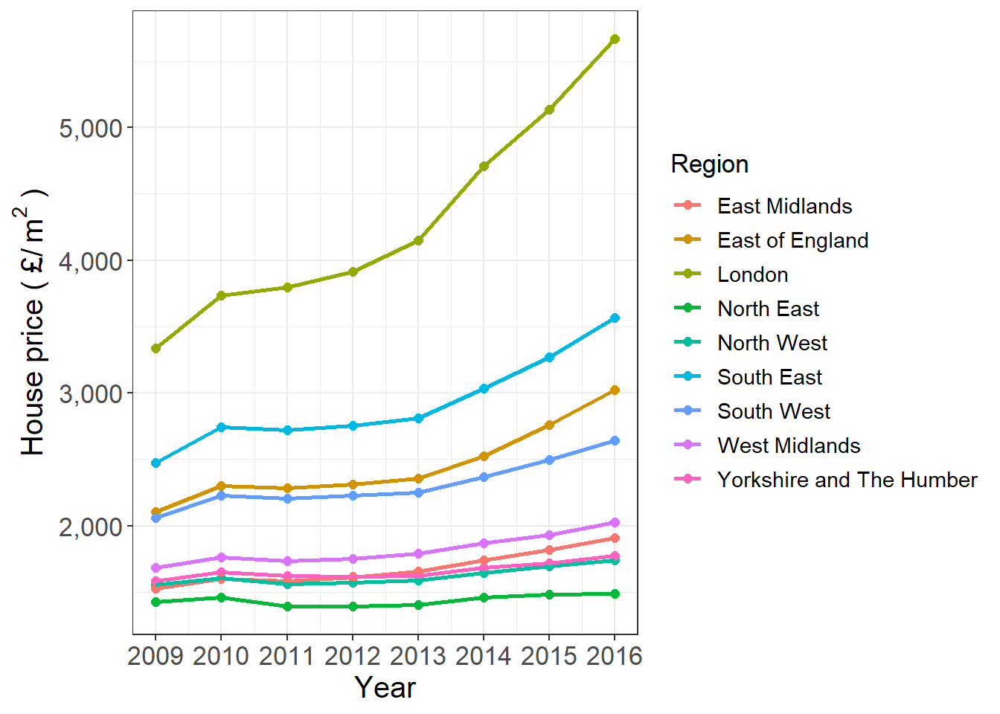

6 Challenge
Let us move to the challenge part to exam your understanding of this seminar. Below are two graphs created by ggplot() based on housedata2.
##Challenge 1
## gor yearchi priceper region
## 1 E12000001 2009 1425.943 North East
## 2 E12000001 2012 1392.045 North East
## 3 E12000001 2015 1480.584 North East
## 4 E12000001 2016 1486.486 North East
## 5 E12000001 2011 1390.934 North East
## 6 E12000001 2014 1460.396 North Eastggplot(data=housedata2, aes(x= yearchi, y=priceper,group=region,color=region)) +geom_point(size=2)+
geom_line(size = 1)+
scale_fill_manual(breaks=c("North East","North West","East Midlands","Yorkshire and The Humber","West Midlands","South West","East of England","South East","London"),
values = c("#E41A1C", "#377EB8" ,"#4DAF4A", "#984EA3", "#FF7F00" ,"#FFFF33", "#A65628", "#F781BF" ,"#999999"))+
theme_bw()+
theme(axis.title = element_text(size=15), axis.text = element_text(size=13),strip.text = element_text(size=15),legend.text = element_text(size=13),legend.title = element_text(size=15))+
ylab("House price per square metre")+
guides(color=guide_legend("Location")) +
scale_y_continuous(labels = scales::comma,)+scale_x_continuous(breaks = c(2009,2011,2013,2015,2016))
##Challenge 2